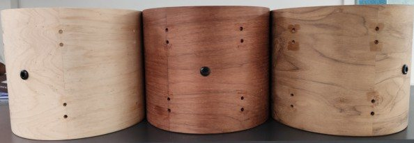

Drum acoustics and timbre
How do shell wood, thickness, reinforcement rings, hoops and drumheads change the sound of a tom-tom? My doctoral work recorded tom-toms built from nine construction configurations, each under sixteen controlled tuning conditions, and used audio descriptors and timbre spaces to test which construction changes are audible and to describe their mechanical-acoustic signatures.
